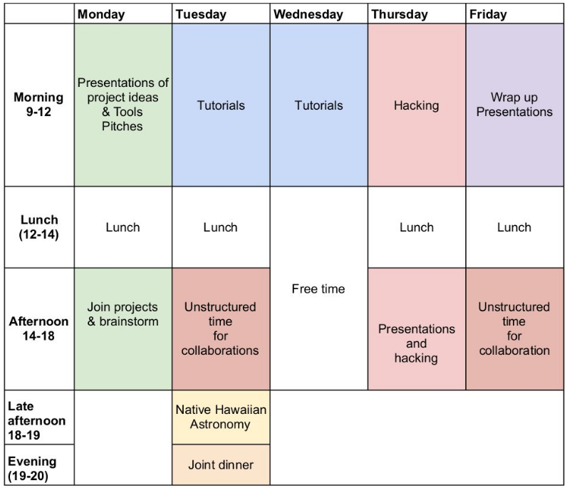

Modelled on the Gaia Sprints, a gathering of international scientists across the observational-theoretical spectrum interested in Gaia science
The 4th data release of the Gaia Space Satellite is planned for December 2026. In this workshop, we will dive into the tremendous amount of data products newly offered and foster collaborations to extract meaningful information from this rich dataset. This release will differ from the previous ones by its complexity, enable new science, and this workshop aims to collaborate in understanding the data and progressing on our projects.
The Gaia Dive originates from, but branches out of, the traditional Gaia Sprints and shares part of the Sprint mindset and objectives. The goal is for the participants interested in scientific questions that can be addressed by using Gaia DR4 data, to assemble and brainstorm, share their expertise and tools, write down ideas, hack, stare at plots and scratch their heads. The Dive is not a traditional scientific meeting: there will be no (or few) talks and will be designed to enhance the benefits of collaborative thinking and form new long-term collaborations. The Dive won’t be a Sprint either: the goal is to form and start collaborations on a small subset of projects to be defined collaboratively by the participants prior to the event.
A tentative schedule is available here
{kind=link}

In addition to a general Code of Conduct, we require participants to agree to the Original Gaia Sprint Collaboration Policy that ensures transparency and openness at the meeting:
All participants at every Gaia Sprint will be expected to openly share their ideas, expertise, code, and interim results. Project development will proceed out in the open, among participants and in the world. Participants will be encouraged to change gears, start new collaborations, and combine projects. Any participant who contributes significantly to a project can expect co-authorship on resulting scientific papers, and any participant who gets signficant contributions to a project is expected to include those contributors as co-authors. These rules make it inadvisable to bring proprietary data sets or proprietary code to any Sprint, unless the participant bringing such assets has the rights to open them or add collaborators.
If you write up any work that started or was (partially) developed at the Gaia Dive and publish it, please remember to include the following acknowledgements:
This project was developed in part at the Gaia Dive, a workshop hosted by the University of Hawaii in 2027 February.
In addition, please make sure that you properly acknowledge the Gaia and DPAC teams, in accordance with their credit and citation instructions.
Neige Frankel
Dan Huber
If you are interested in participating, let us know via the following link!